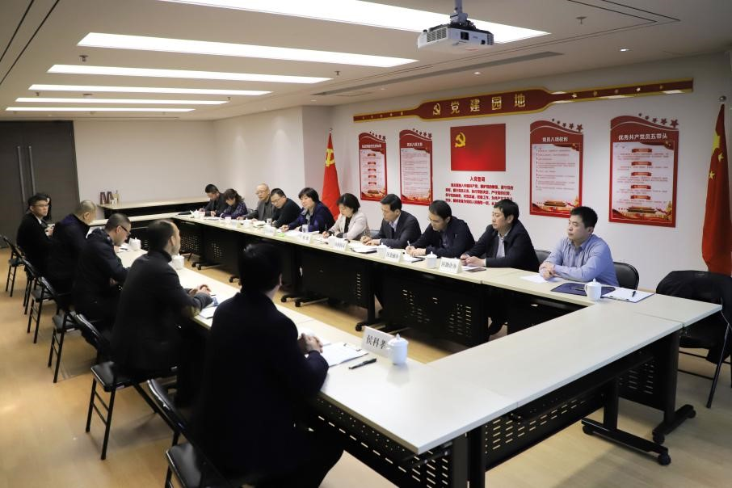
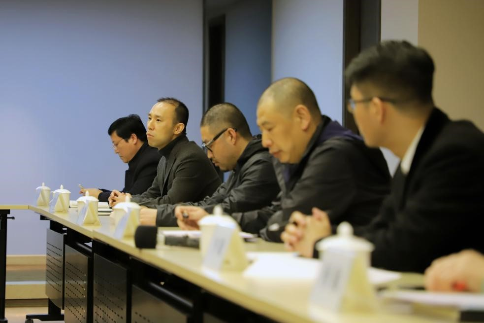
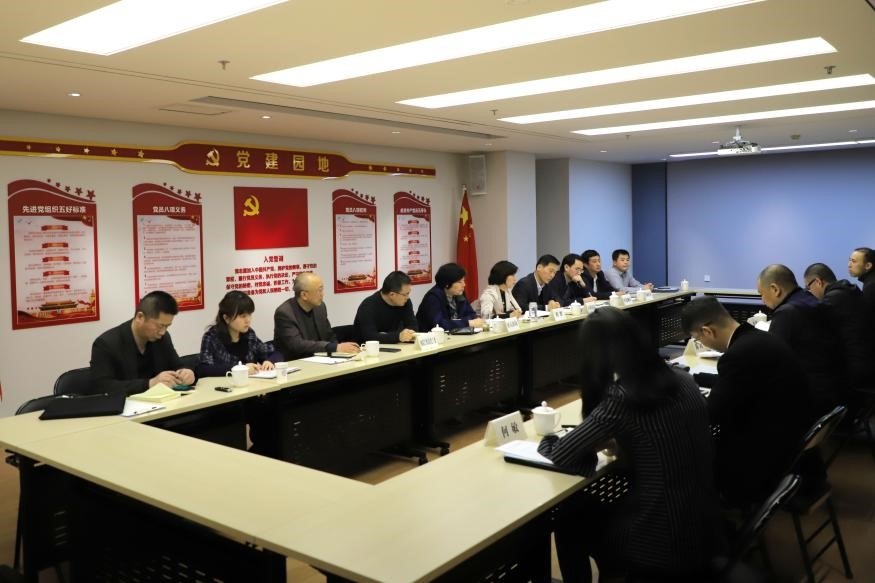

3月21日下午，碑林区副区长程默带领区人社局、区科技局、区金融办、区中小企业局、区助企办、环大和南院门街办主要负责人走访南院门地区重点服务业企业陕西万盛达信息科技有限公司，开展亲商助企活动，进行座谈交流。

企业董事长李刚详细介绍了企业的发展现状、经营特点和发展中遇到的问题。
程默副区长首先充分肯定了企业对碑林区经济发展做出的贡献，表达了政府助力企业发展的良好愿望。随后各部门负责人就企业提出的问题一一做了答复，开展针对性的服务。
企业董事长李刚就各部门答复的关于融资、人才落户、高端人员招聘和高科技项目立项等几方面的优惠政策非常满意，非常感谢区政府领导能够组团实地解决问题，亲身感受到了高效的、优质的服务，表示将努力将企业发展好，为碑林区经济高质量的发展贡献力量。
程默副区长表示，政府将坚定不移地为企业服务，帮助企业解决在发展中遇到的困难和需求。提高服务意识，与企业加强协调配合，共同打造良好的营商环境，全方位服务和保障重点企业，努力促进碑林经济社会各项事业发展。
